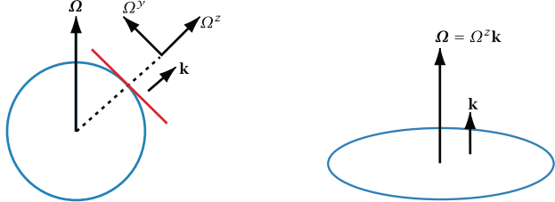

Rate of change of unit vectors
In spherical coordinates, the unit vectors are \( \mathbf{i} \): eastward (longitude direction) \( \mathbf{j} \): northward (latitude direction) \( \mathbf{k} \): radially outward,
these unit vectors change direction with position. One way to track their change is to compute the effective rotation rate \( \boldsymbol{\Omega}_{\text{flow}} \) relative to Earth, based on how the flow moves

Suppose the fluid velocity is \(\mathbf{v} = (u, v, w)\) The meridional component \( v \) produces a displacement \( r \delta \vartheta = v \delta t \), resulting in a local rotation rate around the zonal axis of
\(
-\frac{v}{r}
\) (the negative sign because displacement toward the north pole is associated with negative rotation about the local \( \mathbf{i} \)-axis)
The zonal component \( u \) produces a displacement \( \delta \lambda r \cos \vartheta = w \delta t \), leading to a rotation about Earth's axis
\(
\frac{u}{r \cos \vartheta}
\)
The rotation around Earth's axis is
\(
\boldsymbol{\Omega} = \Omega ( \mathbf{j} \cos \vartheta + \mathbf{k} \sin \vartheta )
\)
If the rotation is instead given by \( \frac{u}{r \cos \vartheta} \), the rotation rate is
\(
\frac{u}{r \cos \vartheta} (\mathbf{j} \cos \vartheta + \mathbf{k} \sin \vartheta) = \frac{u}{r} \mathbf{j} + \mathbf{k} \frac{u \tan \vartheta}{r}
\)
The total rotation rate of a vector that moves with the flow is
\(
\boldsymbol{\Omega}_{\text{flow}} = -\mathbf{i} \frac{v}{r} + \mathbf{j} \frac{u}{r} + \mathbf{k} \frac{u \tan \vartheta}{r}
\)
Applying rate of change of a vector \(\mathbf{C}\) \(\boxed{\left( \frac{d\mathbf{C}}{dt} \right)_I = \boldsymbol{\Omega} \times \mathbf{C}}\) to \(\boldsymbol{\Omega}_{\text{flow}} = -\mathbf{i} \frac{v}{r} + \mathbf{j} \frac{u}{r} + \mathbf{k} \frac{u \tan \vartheta}{r}\).
Consider A vector \( \mathbf{C} \) rotating at an angular velocity \( \boldsymbol{\Omega} \). It appears constant in the rotating frame, but in the inertial frame, it evolves according to
\(
\left( \frac{d \mathbf{C}}{dt} \right)_I = \boldsymbol{\Omega} \times \mathbf{C}
\)
\(
\frac{D \mathbf{i}}{Dt} = \boldsymbol{\Omega}_{\text{flow}} \times \mathbf{i} = -\frac{u}{r \cos \vartheta} (\mathbf{j} \sin \vartheta - \mathbf{k} \cos \vartheta)
\)
\(
\frac{D \mathbf{j}}{Dt} = \boldsymbol{\Omega}_{\text{flow}} \times \mathbf{j} = -\mathbf{i} \frac{u}{r} \tan \vartheta - \mathbf{k} \frac{v}{r}
\)
\(
\frac{D \mathbf{k}}{Dt} = \boldsymbol{\Omega}_{\text{flow}} \times \mathbf{k} = \mathbf{i} \frac{u}{r} + \mathbf{j} \frac{v}{r}
\)
1 Vallis, G.K. (2010) Atmospheric and Oceanic Fluid Dynamics. Cambridge University Press, Cambridge.